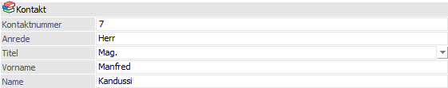
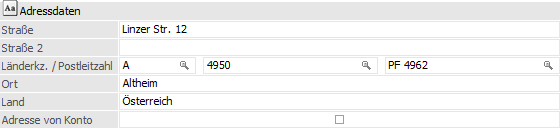
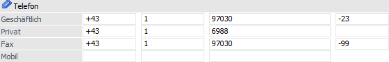

Im Register "Allgemein" werden die Basisdaten des Kontakts erfasst.

Kontakt

Ø Kontaktnummer
An dieser Stelle wird die Kontaktnummer des Kontakts angezeigt. Diese kann editiert werden.
Hinweis
Neben der offiziellen Kontaktnummer (editierbar) gibt es pro Kontakt auch einen internen (nicht editierbaren) Kontaktkey (siehe Register "Details").
Ø Anrede
In diesem Feld wird die Anrede des Kontakts hinterlegt.
Ø Titel
Hier kann der Titel des Kontakts hinterlegt werden. Ist ein Titel noch nicht vorhanden, so wird dieser durch das Eintragen in das Feld "Titel" automatisch angelegt.
Hinweis
Sobald ein Titel in keinem Kontakt mehr zugeordnet ist, so wird dieser automatisch gelöscht und steht somit auch im Feld "Titel" nicht mehr zur Verfügung.
Ø Vorname
Hier wird der Vorname des Kontakts hinterlegt.
Ø Nachname
In diesem Feld wird der Nachname des Kontakts eingetragen.
Adressdaten

Ø Straße / Straße 2
An dieser Stelle wird die Straße des Kontakts erfasst.
Ø Länderkennzeichen
An dieser Stelle wird das Länderkennzeichen zugewiesen.
Ø Postleitzahl / Postleitzahl 2
In diese Felder kann die Postleitzahl der Kontakt-Adresse hinterlegt werden. Durch Drücken der Taste F9 kann nach allen bereits angelegten Postleitzahlen gesucht werden. Wird die entsprechende Postleitzahl gefunden, so wird auch der Ort automatisch übernommen und muss nicht extra eingegeben werden.
Ø Ort
An dieser Stelle wird der Ort hinterlegt. Auch hier kann durch Drücken der Taste F9 nach allen bereits angelegten Orten mit deren Postleitzahlen gesucht werden.
Ø Land
In diesem Feld wird das Land hinterlegt.
Ø Adresse des Kontos verwenden
Durch Aktivieren dieser Option kann bei Ansprechpartnern definiert werden, dass die Adressdaten des Personenkontos verwendet werden sollen. Hierzu zählen die folgenden Felder:
ü Straße / Straße 2
ü Länderkennzeichen
ü Postleitzahl / Postleitzahl 2
ü Ort
ü Land
ü Telefon - Geschäftlich
ü Fax
ü Firmenname
ü WWW-Adresse
Telefon

In dem Bereich "Telefon" können die Telefonnummern bzw. die Faxnummer des Kontakts erfasst werden. Pro Zeile stehen die folgenden Eingabefelder zur Verfügung:
ü Landesvorwahl
ü Ortsvorwahl
ü Nummer
ü Durchwahl